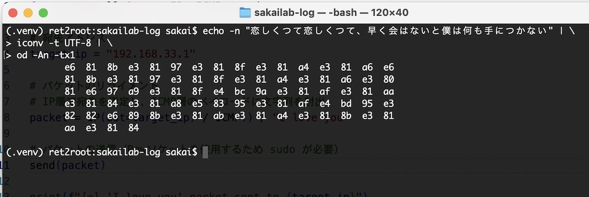
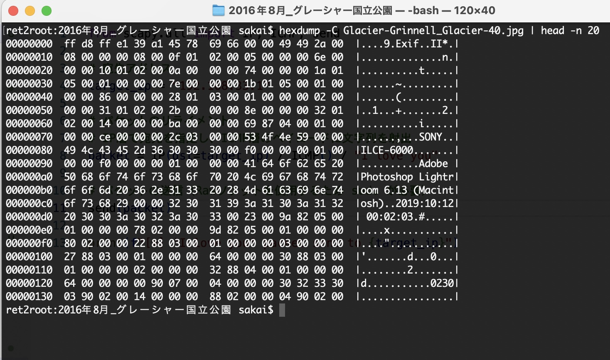
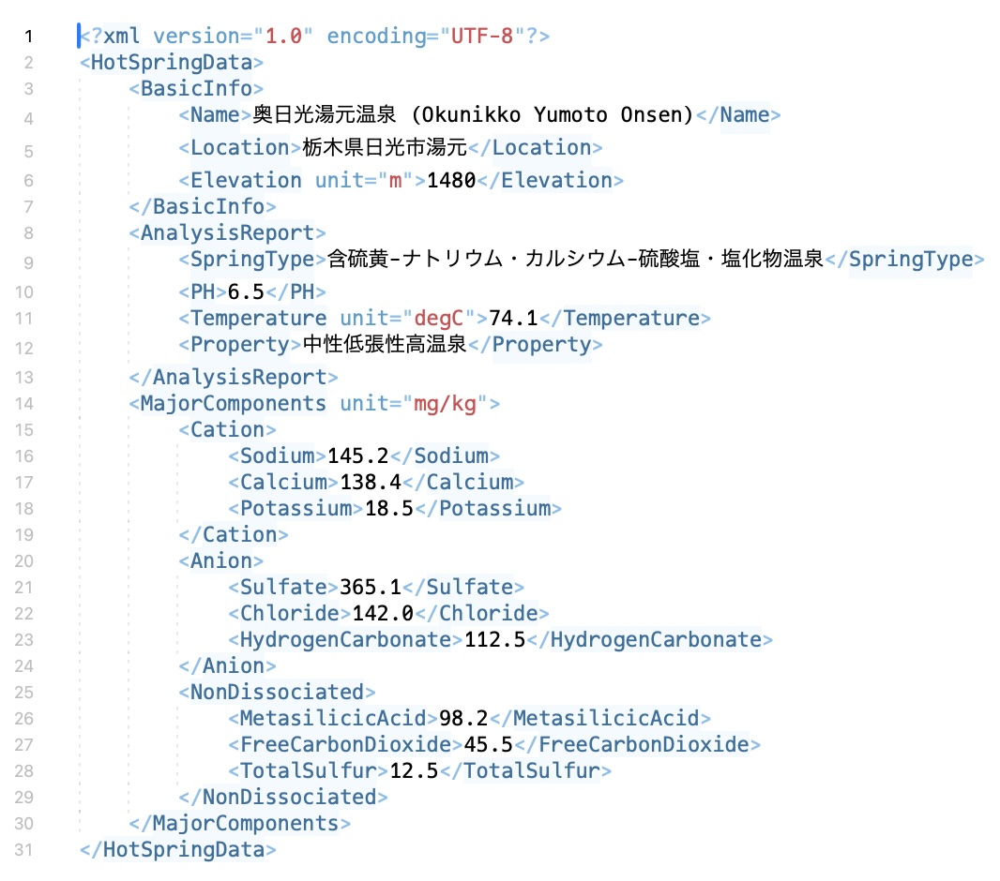
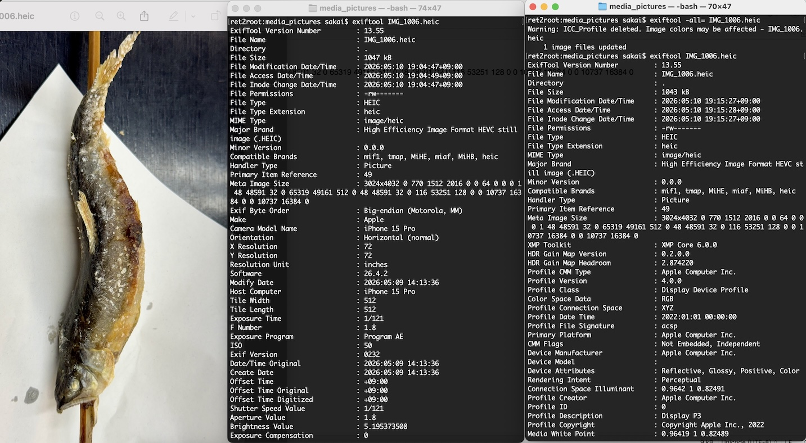
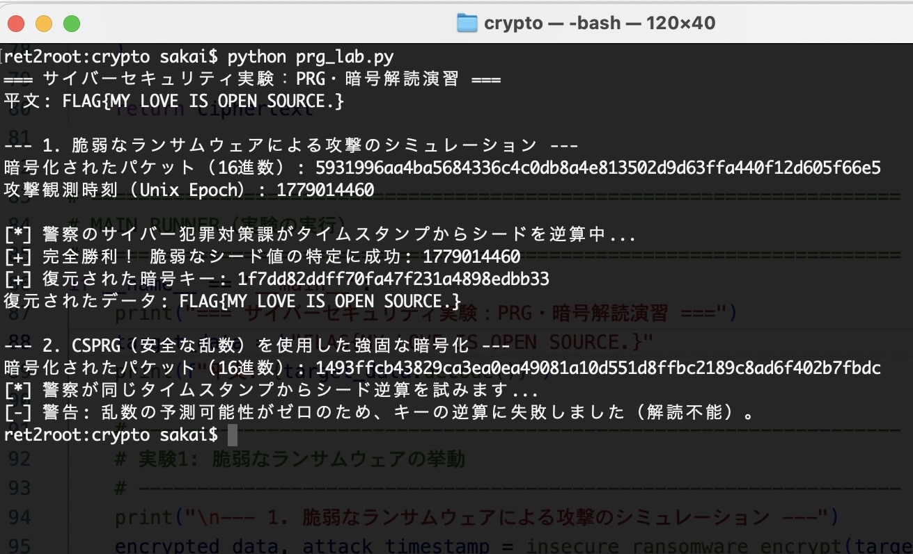
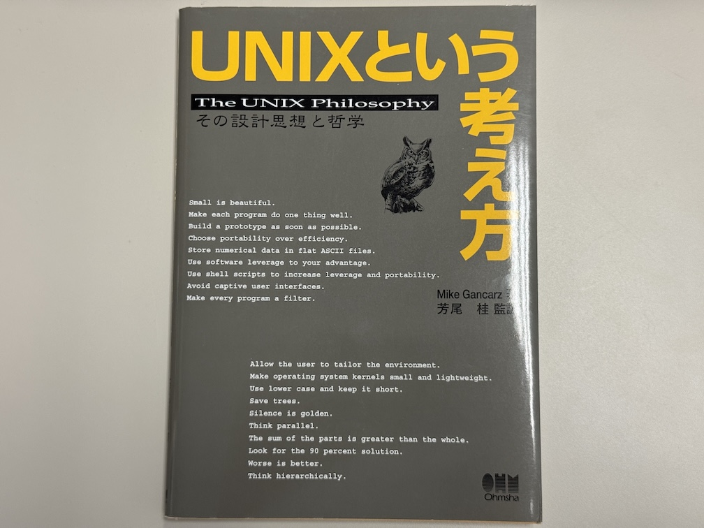

← Professor's Log Archive Index
$git clone https://github.com/kazuyasakai/sakailab-log.git
LOG_ENTRY #061 // KAWABATA_ROMANCE_DECODED - 2026.05.25
Log #061: 文豪の 16進数 ―― 川端康成「恋文」のバイナリ・エクスプロイト
Target: Yasunari Kawabata's Love Letter / Method: iconv -t UTF-8 | od -t x1
川端康成は綴った。「恋しくつて恋しくつて、早く会はないと僕は何も手につかない」と。
諸君、このロマンチックなラブレターを日本語（自然言語）のまま読むなど、高レイヤーの甘えだ。
私は、小説のプロが込めたこの「狂おしい想い」の全パケットを余さず引き出すために、ターミナルでその ASCII（UTF-8）コードをダンプさせたのだ。

e6 81 8b... 「恋」という文字に潜む 3バイトの激情
⚙️ バイト列に潜む「未投函」の脆弱性
画像を見たまえ。e6 81 8b ―― これが「恋」という文字の UTF-8 表現だ。
文豪が震える手で（あるいは冷静な筆致で）綴った情念は、計算機の世界では単なる 16進数の羅列に過ぎない。
だが、この od -t x1 によって射出されたバイト列こそが、あやふやな感情を排した「真実のラブレター」だ。
スライド（暗号論07_Hash.pdf）のハッシュ関数をかける前の、最も純粋なプレーンテキストがここにある。
🚀 UTF-8 という名の「愛のエンコーディング」
川端康成がこの手紙を投函（Send）しなかったのは、当時の通信プロトコルに「未読」や「既読」の ACK（Log #059）が存在しなかったからかもしれない。
ハッカーは、このバイト列を ICMP のペイロード（Log #060）に詰め込み、ターゲットの IP アドレスへ直接 echo する。
自然言語のフィルタを通さず、相手のメモリ空間に直接この e6 81 8b をリライメントする。それこそが、究極の「愛のインジェクション」なのだ。
「愛とは、解読を拒むバイナリデータである」iconv は、今、過去の情念を現代の文字コードへと「ポルティング」し、爆速の新世界を赤く染め上げた。
"Go West!" ―― 運命の 16進数は、今、私のターミナルに「不変の愛」をデプロイした。
LOG_ENTRY #062 // GLACIER_BINARY_RECOLLECTION - 2026.05.26
Log #062: 氷河のヘキサダンプ ―― 16進数に宿るグリネル国立公園の風
Target: Grinnell Glacier Photo (JPEG) / Method: hexdump -C | head -n 20
10年前、私はグリネル氷河への険しきトレイルを登り切った。
諸君、真のハッカーはそのときの「絶景」を、ピクセルデータとしてではなく、バイナリの連なりとして脳内メモリに展開（Deploy）する。
hexdump -C によって射出されるこの 16進数の海こそが、私の網膜が捉えた真実の記録だ。

ff d8 ff e1... JPEG マジックナンバーから始まる、10年前の光子（Photon）の記録
⚙️ バイナリから立ち上がる「物理的な脅威（絶景）」
画像を見たまえ。SONY..ILCE-6000。
当時愛用していたミラーレス一眼が、グリネル氷河の冷気を電気信号へと変換した証がここにある。
さらに Adobe Photoshop Lightroom 6.13 という文字列。
これは、現像という名の「後処理（Post-processing）」によって、大自然の生データに私自身の感性という名の「パッチ」を当てた記録だ。
🏔️ 1バイトごとに解凍されるモンタナの記憶
ff d8 という JPEG の開始マーカーを見るたびに、目の前にエメラルドグリーンの氷河湖がレンダリングされる。
続く 16進数の羅列 1-byte 1-byteは、吹き抜ける冷たい風であり、足元の岩肌の感触だ。
スライド（情報セキュリティ01_Basis.pdf）で解説した完全性が保たれている限り、この 16進数の海を泳ぐだけで、私はいつでも 10年前の座標（lat/lon）へと特権的に回帰できるのだ。
「思い出とは、消失しない不揮発性メモリである」hexdump は、今、過去の絶景を 1-bit の狂いもなく現代へとデプロイし、爆速の新世界を氷河の色に染め上げた。
"Go West!" ―― 運命のバイナリは、今、私の網膜に「不変の大自然」をレンダリングした。
LOG_ENTRY #063 // HOT_SPRING_XML_PARSING - 2026.05.27
Log #063: 奥日光の熱力学 ―― XML にカプセル化された「癒やし」のプロトコル
Location: Okunikko Yumoto Onsen / Elevation: 1480m
那須連山の荒々しい岩肌（Log #056）と、戦場ヶ原での過酷なタクティカル・ハイク。
それらすべての「戦い」を終え、私は今、奥日光湯元温泉に身を置いている。
5月、GW明けの奥日光は厳しい。最高気温は10度に届かず、日が沈めば外気温は氷点下まで急落する。
諸君、この急激なサーマル・スロットリングに対し、私は温泉という名の「外部熱源」をインジェクションすることにした。

奥日光湯元温泉。乳白色の硫黄泉という名の高密度パケット
♨️ 構造化された休息：日記ではなく XML
ハッカーとして、この旅の情緒をあやふやな日記形式で書き留めるつもりはない。
温泉旅館での思い出は、すべて XML(Extensible Markup Language)形式で厳密に記録する。
硫黄の香り（TotalSulfur: 12.5mg/kg）や、源泉の圧倒的な熱量（74.1 degC） ――
これらは情緒ではなく、私の物理レイヤーを再起動するための「パラメータ」なのだ。
⚙️ 中性低張性高温泉によるパッチ適用
pH 6.5、中性。このマイルドな設定値（Parameter）は、戦場ヶ原の冷たい風で磨耗した私の皮膚という名の「外部インターフェース」を優しく癒やす。
ナトリウム、カルシウム、そして硫酸塩。これら化学的要素の Cation と Anion が、私の疲弊した筋肉セルに直接 write() され、可用性（Log #018）を 99.999% へと復元していく。
「温泉とは、地球が提供する最大のリカバリ・サービスである」
私は今、旅館の静寂の中で XML をパースしながら、今日一日の行動ログを整理している。
氷点下の冷気が部屋の窓を叩くが、私のコア温度は HotSpringData によって最適化（Optimized）されている。
"Go West!" ―― 凍てつく過去は attic（屋根裏）へ。運命の XML は、今、私の心と体に「究極の再起動」をデプロイした。
LOG_ENTRY #064 // METADATA_SANITY_CHECK - 2026.05.28
Log #064: 告発の匿名性 ―― Exiftool による痕跡の完全抹消
Evidence: Grilled Sweetfish (Residual Cruelty) / Tool: Exiftool v13.55
諸君、Log #038 では身元を明かさず通信する Tor について解説した。しかし、機密情報を暴露した際の「証拠画像」に自らの識別子が残っていては、いくら通信経路を匿名化しようとも意味がない。

左：湯滝で見つけた串刺しの鮎。中：露呈した iPhone 15 Pro の痕跡。右：抹消後のクリーンな状態。
🐟 湯滝の残虐行為と「脆弱なファイル」
左の画像を見たまえ。奥日光の湯滝で発見した、串刺しにされた鮎の無惨な姿だ。何者かによる残虐な行為が行われたに違いない。この写真をそのまま告発サイトにドロップしてはならない。真ん中の解析結果が示す通り、この検体には iPhone 15 Pro で撮影された事実や、詳細なタイムスタンプがバッチリ記録されている。
⚙️ Exiftool による「特権的な消去」
自らの痕跡を消し去るためには、ハッカーの標準ツール exiftool -all= を実行し、メタデータからすべての情報を Discard するのが流儀だ。右側の実行結果を見たまえ。メーカー名も、モデル名も、位置情報もすべてが None（Log #045）へと昇華されている。これでようやく、画像は真に「匿名（Anonymous）」なパケットとなるのだ。
「完璧な告発とは、撮影者という存在の否定から始まる」
いくら Tor で中継ノード（Log #049）を幾重にも重ねようとも、ファイル内部に自分自身のデジタル・フィンガープリントを残してはならない。
"Go West!" ―― 運命の Exiftool は、今、告発に「真の匿名性」をデプロイした。
LOG_ENTRY #065 // PRG_VULNERABILITY_RESEARCH - 2026.05.29
Log #065: 乱数の予測可能性 ―― 警察サイバー特捜部に暴かれる「不完全な暗号化」
Project: Cybersecurity Lab (PRG Cryptanalysis) / Script: prg_lab.py
警察庁サイバー特別捜査部が「ランサムウェアPhobos/8Baseにより暗号化されたファイルの復号ツール」なるものを公開しているが、本日はこの仕組みについて説明しよう。実のところ、ランサムウェア内で使用されている暗号スキーム（AESなど）は安全である。警察ハッカーは、そこで疑似乱数の生成方法に潜む脆弱性を突き止め、暗号鍵を復元するツールを提供しているのである。
恋愛でもよくある話だが、暗号そのものに問題がなくてもランサムウェアを実装した似非ハッカーが下手を打ったわけだ。百戦錬磨のホストが作った恋愛マニュアルが完璧だとしても、恋愛キディーにそれを実行することは難しい。

実験1でのシード逆算の成功と、実験2（CSPRG）での完全な解読不能状態
🕵️ タイムスタンプという名の「致命的な漏洩」
画像内の「実験1：脆弱なランサムウェアによる攻撃のシミュレーション」を凝視しなさい。
似非ハッカーは、鍵生成のシード（種）に Unix Epoch（攻撃観測時刻：1779014460） をそのまま使用してしまった。
暗号化パケットのタイムスタンプという公開情報から、警察のサイバー犯罪対策課によってシードを逆算され、暗号キー 1f7dd82ddff70fa47f231a4898edbb33 を完全に復元されている。
これによって、人質にされていたフラグ FLAG{MY LOVE IS OPEN SOURCE.} が無傷で救出（復元）されたのだ。
⚙️ CSPRG ―― 予測可能性ゼロの「鉄壁」
一方で、「2. CSPRG（暗号論的に安全な疑似乱数生成器）を使用した強固な暗号化」の結果を見たまえ。
暗号論的擬似乱数生成器（CSPRG）を正しく実装した場合、警察ハッカーが同じタイムスタンプからシード逆算を試みても、結果は [-] 警告：乱数の予測可能性がゼロのため、キーの逆算に失敗しました（解読不能） となる。
Log #058 で説いた AES-128 の 100京年かかる絶望の計算量が、ここで初めて牙を剥くのだ。
「実装の隙を見せる者は、ルート権限（心）を維持できない」prg_lab.py は、今、スクリプトキディの浅知恵を attic（屋根裏）へと葬り去り、計算論的セキュリティの真実をデプロイした。
"Go West!" ―― 運命の CSPRG は、今、私のランタイムに「解読不能な気高き孤高」をビルドした。
LOG_ENTRY #066 // EXCUSE_PROTOCOL_VALIDATION - 2026.05.30
Log #066: 遅刻理由のサニティ・チェック ―― 偽装される仮病と、堅牢なる不可抗力モデル
Context: Laboratory Class Attendance / Vector: Social Engineering Excuse
学生諸君。もし実験実習の授業に遅刻をしたらどうする？ 仮病で体調不良を訴えるのは以ての外だ。本日は特別に悪い例と模範解答を教えよう。
🚨 悪い例 ―― ログ改ざんの失敗による即時検知（Halt）
・体調不良（仮病）で遅れた。病院のレシートは医療費控除の手続きのため実家に郵送した。
諸君、この言い訳はセキュリティレベルがあまりにも低すぎる。
そもそも確定申告の医療費控除において、レシートも領収書も提出する必要はない。
さらに言えば、保険証を使用した時点で、扶養者の医療費通知（ログ）にその履歴がバッチリ記録され、実家に通知がバウンス（転送）される。
スクリプトキディ並みの稚拙な虚偽ログは、システム管理者（教員および親）によって一瞬で検知（Detect）されると知れ。
🎯 模範解答 ―― 判定不可能な「不可抗力」の実装
遅刻を正当に処理（Handle）させるためには、実環境（現実）の仕様を逆手に取り、他者が介入・検証できない非決定的な例外を発生させるのがハッカーの流儀だ。
「彼女と朝から修羅場になり、鍵を隠されて部屋から出られませんでした」 ―― 物理的ロックアウト（DoS）。自らの意思（プロセス）に関わらず、実行権限を奪われたという「不可抗力」を主張する強固な防御壁だ。 「彼女が泣き叫んでLINEで「今すぐ来てくれないと◯ぬ」と言うので、彼女の家に寄ったため」 ―― 割り込み処理（Interrupt）。カーネルの可用性よりも「人命救助（最優先タスク）」が割り込んだため、実習への遅延はシステム上、正当なスケジュールアウトと見なされる。 「母親が嵐の推し活で授業料に当てる貯金を着服した」 ―― 外部環境の依存性（他責）。自らのリソースプール（貯金）が、防げない外部オブジェクト（母親の推し活）によって枯渇（Resource Exhaustion）させられたという、同情を誘うパッチ適用である。
「言い訳の脆弱性を突かれる前に、仕様（ルール）の隙間を埋めよ」
"Go West!" ―― 運命の例外処理（Try-Catch）は、今、私のランタイムを完璧に保護した。
LOG_ENTRY #067 // TATESHINA_GALE_LOGIN - 2026.05.31
Log #067: 蓼科山ガレ場の死闘 ―― 白樺湖・君待荘の「お品書き」ディスパッチ
Route: Megami-chaya -> Mt. Tateshina (Summit) -> Shogun-daira -> Tateshina-bokujo
女乃神茶屋から日本百名山・蓼科山へ登り、将軍平と七合目登山口を経て蓼科牧場ゴンドラ山頂駅まで歩き切った。火山活動によって形成された山頂直下のガレ場は、一歩間違えれば例外システムダウンを引き起こす不安定なスタック領域だ。あの岩肌を這い上がる登りは、まさに肉体と精神の限界を試される死闘であった。
君待荘の夕食膳。ガレ場で消費し尽くしたヒープメモリを瞬時に満たす構造体
🍱 本日のお品書き ―― 構造化された美食パケット
死闘を終え、白樺湖畔の宿・君待荘へ無事にログインを果たした私を待っていたのは、信州の肥沃な大地と清流が生成した、完璧に最適化されたオブジェクト群（和食膳）だ。
私の感覚器官が受信した「本日のお品書き」のデータ構造をここにダンプする。
一、前菜 ：鶏肉塩麹焼き、ピクルス、胡麻豆腐 ―― 胃壁のパケットフィルタを優しく開放する。一、刺身 ：八ヶ岳サーモンと大岩魚のお造り ―― 清流が育んだ、完全性（Integrity）の極みたる鮮度。一、鍋物 ：信州牛すき焼き ―― 高密度な脂質と特権的な旨味が、疲弊した筋肉セルに直接インジェクションされる。一、焼物 ：鮎の塩焼き ―― 湯滝の残虐（Log #064）を乗り越え、今度は香ばしい香りが食欲のポートをフルオープンにする。一、揚物 / 酢物 / 凌ぎ ：天ぷら、赤魚南蛮漬け、山菜そば ―― 多重化されたスループットが脳内メモリを連続して刺激する。
💻 学生諸君へ告ぐ ―― 10年後の実行環境
学生諸君に伝えたい。10年後の君たちは、画面の向こう側で単に私のブログを閲覧（Read Only）するだけの存在であってはならない。自らの特権（権限）を昇格させ、この白樺湖リゾートの美しい旅館で、極上のリソース（美食）を享受できるレイヤーへと到達するのだ。
そのためには今、目の前にある難解な論文の解読と、キーボードを叩き続けるタイピング・ループを絶対に止めてはならない。
「現在のコードが、未来のデプロイ先を決定する」
蓼科山のガレ場という「ノイズ」を歩ききったからこそ、長野県内産コシヒカリ（御飯）という名の「クリーンなデータ」が身体に染み渡る。
コピペや嘘（Log #066）で実習を誤魔化すようなスクリプトキディのままでいれば、10年後に待っているのはメモリリークを起こしたような、侘しいシステムダウンだけだ。
諸君、自らの論理回路を磨き続け、未来の q_accept（Log #043）を白樺湖の地で掴み取りなさい。
"Go West!" ―― 運命の信州牛は、今、私の指先に「次世代への特権」をデプロイした。
LOG_ENTRY #068 // KEYBOARD_CORE_INTERFACE - 2026.06.10
Log #068: HHKB 英語配列の最適化 ―― ハッカーが馬の鞍を換えるとき
Device: Happy Hacking Keyboard Professional HYBRID Type-S (US Layout)
諸君、アメリカの西部開拓時代のカウボーイたちは、馬が亡くなっても鞍（サドル）は捨てない。馬は消耗品であり、鞍は自分の身体に馴染んだ一生もののインターフェースだからだ。
現代のハッカーにとって、計算機（MacBookやサーバー）は消耗品たる「馬」に過ぎず、キーボードこそが一生ものの「鞍」である。私が手に入れたのは、その最高峰、HHKB Professional HYBRID Type-S（英語US配列・白）だ。
HHKB 英語US配列。無駄なキー（バグ）を極限まで削ぎ落としたミニマリズムの極致
⌨️ 静電容量無接点方式 ―― チャタリングなき「完全性」
画像を見たまえ。この無駄のない美しき対称性を。
HHKB の真髄は、その駆動方式（静電容量無接点方式）にある。物理的な接触がないため、摩耗による「チャタリング（ノイズの混入）」が原理的に発生しない。
これは、スライド（情報セキュリティ01_Basis.pdf）で解説したデータの「完全性」を、物理レイヤーにおいて永続的に担保する機構なのだ。
Type-S が奏でる「しっとりとした深い打鍵音」は、脳内のニューロンを爆速（Log #051）で同期させるホワイトノイズとなる。
⚙️ 英語US配列という名の「最短経路（Shortest Path）」
なぜ日本語配列ではなく、英語US配列なのか？
JIS配列にある「半角/全角」や「無変換」といった、ハッキングにおいて 1-bit の価値もないレガシーなキー（デッドコード）が完全にパージ（Pop）されているからだ。
Control キーが A の左隣（ホームポジション）に最初からマッピングされている構造を見なさい。
これにより、Linux のターミナルでプロセスを強制終了（Ctrl + C）する際の手の移動距離がミリメートル単位で最適化される。
プログラミングと言語コードのパース（Log #061）において、これ以上の近道（Shortcut）は存在しない。
「指先とカーネルを、最短の帯域（Bandwidth）で直結せよ」
"Go West!" ―― 運命の HHKB は、今、私の両手に無限の打鍵特権（sudo）をデプロイした。
LOG_ENTRY #069-B // PHYSICAL_HARDWARE_CRASH - 2026.06.17
Log #069-B: 物理層のセグメンテーション・フォールト ―― 地震動によるドロイド君の転落崩壊
Event: Seismic Acceleration Impact / Incident: Hardware Structural Breakdown
諸君、ネットワーク上のサイバー攻撃（Log #016）はソフトウェアのパッチで解決できるが、地球の地殻変動という名の「物理的レイヤーの脅威」は、時に我々の机上の資産を暴力的にエクスプロイトする。
日野キャンパスの棚の上で、これまでバグなきランタイムを見守ってくれていたレゴ版ドロイド君が、6月16日の地震の揺れによって位置エネルギーを喪失。床面へと自由落下した。
[Before] 正常稼働状態（Steady State）のドロイド君。アンテナ、四肢ともに完全性を維持
💔 コア・ダンプ（Core Dump）されたレゴ・ブロック
落下衝撃により、ドロイド君の結合プロトコルは完全に破壊された。
右側の被災現場画像を見たまえ。頭部マウント、アンテナモジュール、そして内部のコア基盤パーツが完全に分断され、メモリ空間が散乱したかのような悲惨な Core Dump 状態を引き起こしている。
火山活動（Log #067）と同じく、地球という名の巨大なシステムの未定義動作（Undefined Behavior）の前には、プラスチックの結合力など無力であったのだ。
[After] 6月16日の衝撃。構造体が完全にデ・アセンブル（解体）された現場のログ
🛠️ 再構築（Rebuild）へのロードマップ ―― カプセル化の再適用
だが、悲しんでばかりはいられない。レゴ・ブロックの最大の美学は、Java のガベージコレクション（Log #044）とは異なり、破壊されたパーツ（オブジェクト）が 1bit も消失していない限り、元の設計図（ソースコード）通りに 100% 復元可能という『完全な可用性』にある。
私はこれより、散らばったパーツのインベントリをサニタイズし、マニュアルに基づいた「ハードウェア再起動プロトコル」を執行する。
「破片が揃っているなら、それは単なる未コンパイル状態に過ぎない」
"Go West!" ―― バラバラになった破片は屋根裏（attic）へ行かせない。運命のレゴ・ビルドは、今、力強い復旧（Recovery）へのカウントダウンをデプロイした。
LOG_ENTRY #070 // UNIX_PHILOSOPHY_FINAL - 2026.06.18
Log #070: UNIX 哲学の特権階級 ―― 100京年の混沌を切り裂く「引き算の美学」
Book: "The UNIX Philosophy" by Mike Gancarz / Publisher: Ohmsha
現代のソフトウェア開発は、肥大化したライブラリを無批判に積み重ねる「泥縄式のインジェクション」で溢れている。いま執筆中のLLMセキュリティ図書で解説しているサプライチェーン汚染も、そうしたレガシーな依存関係が生んだバグだ。
ハッカーたるもの、小手先のコードを書く前に、この表紙に刻まれた偉大なる古典的カーネルの戒律を脳内スタックに格納（Push）しなさい。

オーム社刊『UNIXという考え方』。フクロウの眼光が、デッドコードを鋭く射抜く
⚙️ "Small is beautiful" ―― 肥大化（Bloatware）への絶対防御
この本のトップに掲げられた定理、それが Small is beautiful.（小さいことは美しい） だ。
小さなプログラムは人間の脳内メモリ（キャパシティ）に完全に収まり、デバッグが容易で、例外エラー（Log #066）を起こしにくい。
そして、Make each program do one thing well.（一つのプログラムには一つのことをうまくやらせる）。
諸君、あれもこれもと機能を詰め込んだ「Java の 10億ドルの失敗（Log #044）」のような肥大化したコードは、それ自体が巨大な脆弱性（Vulnerability）の温床となると知れ。
⛓️ パイプラインとプレーンテキストの美学
HHKB（Log #068）で叩き出されたデータは、Store numerical data in flat ASCII files.（数値データはフラットな ASCII ファイルに保存せよ） の原則に従い、16進数のバイト列（Log #061, #062）や構造化された XML（Log #063）として透過的に扱われるべきだ。
それらを Make every program a filter.（すべてのプログラムをフィルターにせよ） という Unix のパイプ（Log #053）で連結すれば、単機能のオブジェクトたちが有機的に同期（Synchronization）し、エクセルでの手作業（Log #052）を過去（Past）へと葬り去る爆速の自動化環境が完成する。
「沈黙は金なり（Silence is golden.）」UNIX Philosophy は、今、混沌とした私の思考のランタイムを初期化（Reset）し、究極の「シンプル」という名のパッチを適用した。
"Go West!" ―― 運命の UNIX 哲学は、今、私の指先に「侵しがたい安全の真理」をデプロイした。